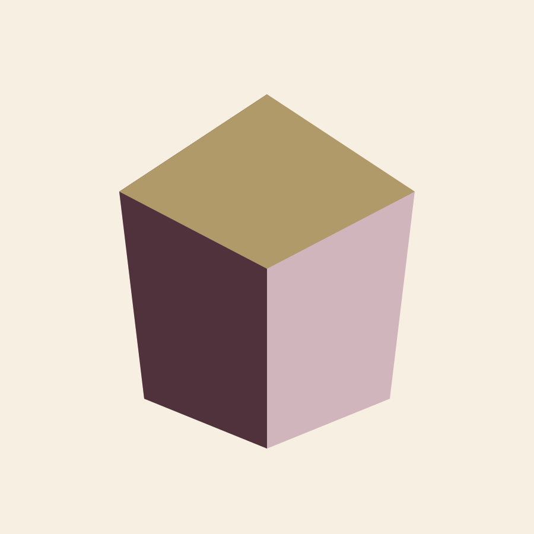
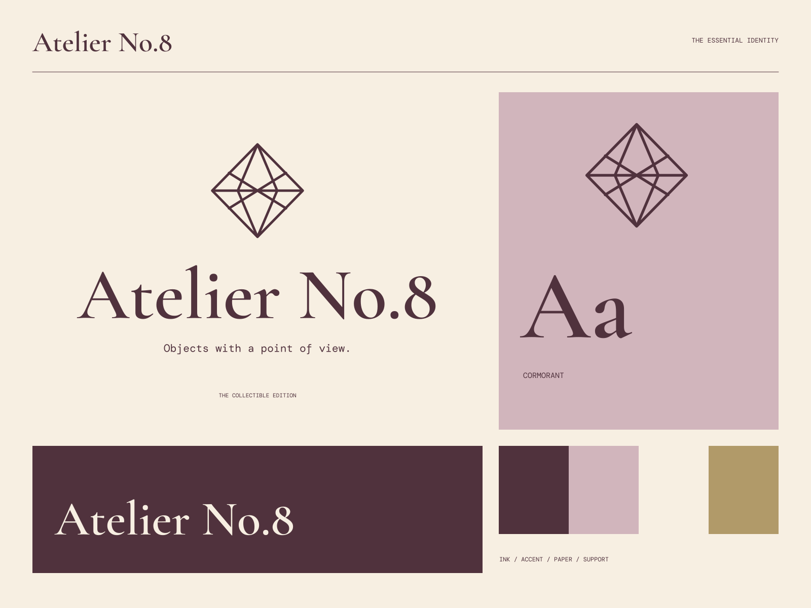

01
An object with intention
A considered form, a clear material, and a reason to exist.
ATELIER NO.8 / OBJECTS & EDITIONS
Objects with a point of view. Material, with a point of view.

A coherent little world
Material, with a point of view. Objects with a point of view.
01
A considered form, a clear material, and a reason to exist.
02
Small decisions that reward looking a little closer.
03
Objects whose personality can outlast the first impression.

The point of view
Faceted sculptural objects, edition stamps, restrained mauve fields, and exquisitely proportioned serif typography. Every object is treated as a small piece of architecture.